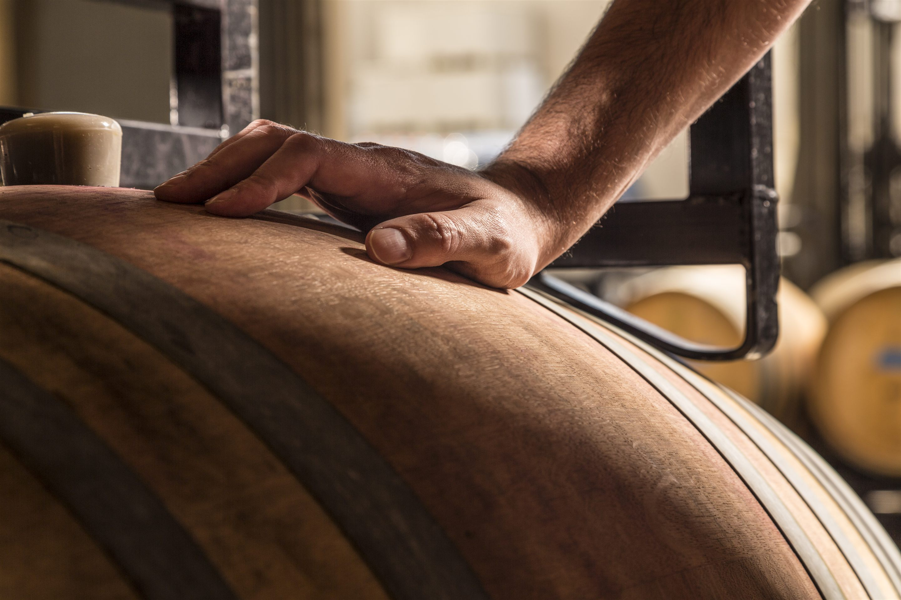

Founded in 2010 by Kevin and Stefanie White, Kevin White Winery was born from a simple but deeply held belief: that Washington could produce beautiful Rhône-inspired wines with balance, depth, and delicacy, crafted to pair extraordinarily well with food. For 15 years, that belief guided everything we did. From the beginning, our goal was to craft wines that were complex, expressive, and meant to be shared around the dinner table.
Influenced by the great wines of France's Rhône Valley, Kevin focused primarily on Syrah, Grenache, and Mourvèdre from cooler-climate, higher-elevation vineyards in the Yakima Valley. These sites allowed us to produce wines with depth and power, yet also finesse and restraint. Over the years, we were honored to work with extraordinary growers and vineyard partners, and to add our own voice to the story of Washington wine.
As we celebrated the final chapter of Kevin White Winery in 2026, we did so with immense gratitude and pride. What we are most proud of is not only the wine, but the community that formed around it. For 15 years, it has been our privilege to share these wines with you, to celebrate Washington's extraordinary vineyards, and to contribute in our own way to the tradition of Rhône-style winemaking in this state.
We hope our wines brought joy to your table and complemented meaningful moments in your lives. From our family to yours, thank you for being part of this journey.
Kevin